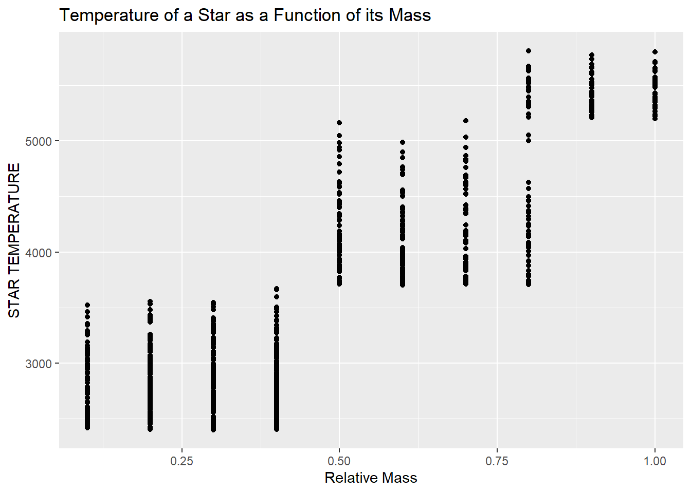
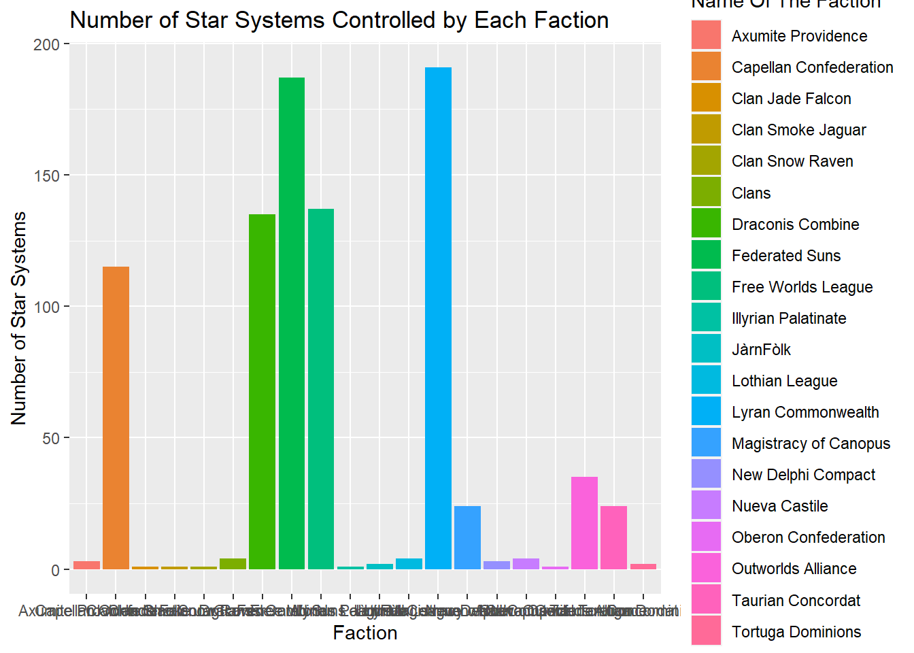
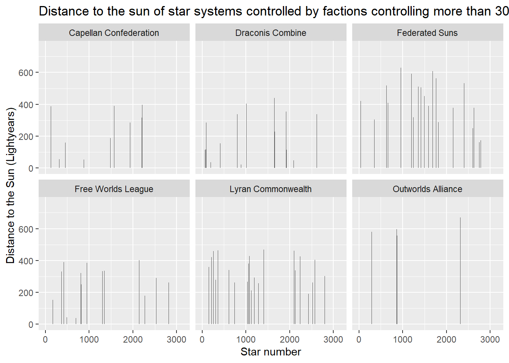

Data loading is successfulFinalLab_bt_empire
Link to the github repository
1 - Main Data Set Import
Q3
All numerical variables are recognised as they should beQ4
| Metric | Value |
|---|---|
| Number of Observations | 1051 |
| Number of Variables | 8 |
| Number of Missing Values (per variable) | 0, 0, 0, 34, 34, 0, 34, 0 |
| Number of Observations with at Least One Missing Value | 101 |
2 - Introductory Analysis
Q5

Q6
| Variable | Star | Value | Extreme_Type |
|---|---|---|---|
| Relative Mass | 2341 | 1.00 | Biggest Value |
| Relative Mass | 155 | 0.10 | Smallest Value |
| STAR TEMPERATURE | 2115 | 5811.00 | Biggest Value |
| STAR TEMPERATURE | 628 | 2402.00 | Smallest Value |
| RADIUS | 592 | 1.15 | Biggest Value |
| RADIUS | 2475 | 0.07 | Smallest Value |
| relative luminosity | 1561 | 1.50 | Biggest Value |
| relative luminosity | 155 | 0.01 | Smallest Value |
3 - Factions
Q8
Q9
| Faction_ID | Count |
|---|---|
| A | 51 |
| I | 54 |
| U | 65 |
Q10
There is 6 missings stars in SYTEM%FACTION.csv
Q11

Q12

Q13
| Name Of The Faction | star_number | RADIUS |
|---|---|---|
| Axumite Providence | 3067 | 0.85 |
| Capellan Confederation | 115 | 1.14 |
| Clan Jade Falcon | 2949 | 0.67 |
| Clan Smoke Jaguar | 2951 | 1.10 |
| Clan Snow Raven | 2952 | 0.14 |
| Clans | 2950 | 0.70 |
| Draconis Combine | 2307 | 1.15 |
| Federated Suns | 2751 | 1.15 |
| Free Worlds League | 368 | 1.15 |
| Illyrian Palatinate | 2575 | 0.61 |
| JàrnFòlk | 3136 | 0.91 |
| Lothian League | 1522 | 0.69 |
| Lyran Commonwealth | 2147 | 1.14 |
| Magistracy of Canopus | 592 | 1.15 |
| New Delphi Compact | 3097 | 0.89 |
| Nueva Castile | 2974 | 1.02 |
| Oberon Confederation | 620 | 0.63 |
| Outworlds Alliance | 230 | 0.96 |
| Taurian Concordat | 2341 | 1.13 |
| Tortuga Dominions | 1831 | 0.49 |
Q14
Each faction controlling at least one star system in 2830 is active this year